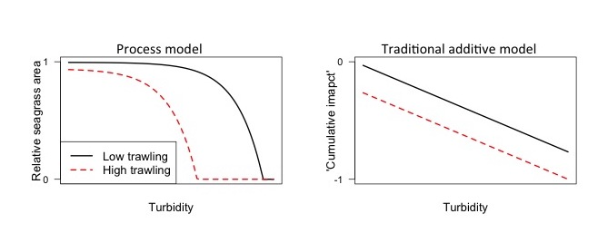

This blog supplements my talk for Marine Alliance for Science and Technology Scotland workshop on Cumulative Stressors. Some of it is published by myself and others and some of it I intend to publish. Get in touch if you are interested in knowing more.
Summary
The biodiversity of most marine regions is affected my multiple human-caused stressors. These stressors can interact in unpredictable ways that can expedite the rate of taxonomic and functional extinction, or reduce the effectiveness of conservation actions. I will provide an overview for how can stressors interact to affect marine populations, and what decision makers can do to respond to multiple stressors that interact. Science needs to progress beyond simple ‘additive’ models and consider the processes that underlie interactions among stressors, so we can make more accurate predictions about how stressors interact. Decisions makers are faced with considerable uncertainty about the outcomes of conservation actions when there are multiple stressors. Decision science can help identify priority actions for conservation when faced with uncertainty.
Introduction
Conservation management aims to avoid species extinction, whether that is taxonomic extinction or functional extinction. But, we never really know why species go extinct. There are typically too many circumstantial stressors of an organism to be able to partition out which one caused the extinction. Here I define stressors as human caused changes to the environment that have a detrimental effect on a marine population or ecosystem. Examples include mortality from fisheries by-catch and sub-lethal stressors like toxins that affect reproductive health. For instance, one of the most famous examples of extinction was the extinction of the Caribbean Monk Seal. The monk seal’s extinction was ostensibly caused by hunting, but overfishing of their food resources may also have contributed (McClenachan and Cooper 2008). Dugong, an important herbivore of seagrass meadows may also be functionally extinct along many areas of Queensland’s coast, having decline 97% since the 1970s (Hughes et al. 2005). Their decline has been caused by a combination of habitat loss from poor water quality, hunting, boat strikes and entanglement in fishing gear. Determining the cause of these declines is important for identifying what actions managers can take to avert those declines.
Most marine ecosystems are affected by multiple stressors (Halpern et al. 2015), making it hard to attribute a population’s decline to any single stressor. Stressors can also interact in unexpected ways, meaning that population declines can occur faster or slower than we might have expected based on their effects in isolation (Côté et al. 2016). Thus, extinction is often driven by the inextricable combination of multiple stressors. The inseparable effects of multiple stressors poses several challenges to the science of extinction and to the management of nature, both of which tend to be reductionist.
First, there is the estimation challenge: in the wild systems that we study it is arguably more common to observe multiple confounding stressors acting at once, rather than their effects in isolation. Therefore, it can be difficult to measure the impact of individual stressors and determine what benefits (or not) acting on one or the other might bring for averting extinction.
Second, there is the uncertainty challenge: stressor interactions mean that actions on single stressors may have unexpected outcomes, and actions to address one stressor may sometimes even worsen the population’s decline. How stressors interact to affect a population will often remain unknown. In fact, stressors are now so globally extensive that the number of potential interactions we could study will in most region far exceed the capacity of science to measure those interactions. Thus, when determining the benefits of conservation actions, managers need to act in the face of considerable uncertainty about those benefits.
Finally, there is the prioritization challenge: management agencies have constraints on what they can do, often for economic (e.g. budget) or social (e.g. conflicting human uses of the marine environment) reasons. When choosing what actions to take to lessen stressors, management must decide how to prioritise to find those actions that give the best outcomes for the population given the constraints they face.
Here I will ask what managers and science can do to avert extinctions in the face of multiple stressors that have uncertain interactions. The focus will be on managing multiple different types stressors, not cumulative impacts. Cumulative impacts science is an all encompassing term that includes the impacts of repeat events of the same stressor (e.g. multiple marinas) and also the impacts of multiple different stressors on populations. When assessing the impact of multiple stressors we often need to consider how they will interact.
First, I will provide a conceptual overview for how multiple stressors can interact to affect marine populations (the field is in disarray with only broad agreement on how to even classify different types of interactions). Second, I will examine the prevalence of different types of interactions and ask whether we can ever make educated guesses about how stressors interact (perhaps soon, but the science is not established yet). Third, in situations when interactions are unknown I will ask what is the safest for managers to assume and I will describe the paradox of managing interacting stressors. Finally, I draw on the conservation planning literature to provide a revised road map for managing multiple (and potentially interacting) impacts.
Conceptual overview of interactions among multiple stressors
At a conceptual level, interactions among multiple stressors occur when stressors interact via some physical or biological process. For instance, interactions can be purely driven by physical process, such as warming polar oceans also causing freshening due to sea ice melt (Boyd and Brown 2015). Examples of biological processes underlying interactions include the increased susceptibility of corals to bleaching in clearer water (due to light stress). Ecological interactions can also cause stressor interactions, due to feed-backs within food-webs. For instance, ocean acidification and fishing may interact to affect some benthic molluscs by slowing their growth, but fishing will reduce predation pressure.
When we quantify interactions we need a null model with which to compare our observations (from the field or experiments) with our expectation. In the past these null models have been based on the ANOVA methodology. Therefore, if we want to know how two stressors interact, we measure the response variable (e.g. growth of seagrass) in a crossed trial. The interaction is then measured as the difference between the sum of effects from the single stressor trials and the outcome of the crossed trial. If the outcome of the crossed trial is greater than the sum then the interaction is said to by synergistic, if it is less than the sum then the interaction is said to be antagonistic.
Interactions matter if you are managing just a single stressor. From a management perspective a synergy will mean declines happen faster than you expected in the combination of two stressors, but that acting on one stressor brings a serendipitous benefit in terms of reducing that stressor and its interaction with another stressor (Brown et al. 2013).
For instance, we could speculate that poor water quality and boat traffic would have a synergistic impact on dugong population trends. Poor water quality reduces the growth of seagrass the food of dugongs. Boats can collide with dugongs causing injury and death. Dugongs will travel to find high quality food patches (e.g. Sheppard et al. 2010). This may increase the risk of boat strikes. So we could infer that by improving water quality so that seagrass grows more densely we may also serendipitously reduce the risk of boat strikes. Therefore, the benefit of actions on water quality has an additional benefit in terms of reducing boat mortalities.
An antagonism means that acting on one stressor may be ineffective, because the other stressor still dominates. In some cases you may also have mitigative interactions, whereby acting on one stressor actually makes the impacts of the other stressor worse.
Antagonisms can occur when you have dominance effects. For instance, say that toxins and disease are most likely to kill old or weak seals. Then if we have a disease outbreak in an area that has a high toxin load, we might see little additional seal deaths – the toxins already killed all the susceptible seals!
Antagonisms can also be mitigative, meaning that one stressor weakens or even reverses the effect of another (such effects have also termed mitigating synergies). Such mitigative effects may often occur in food-webs. e.g. if two stressors have a synergistic effect on a species predator, then their combination may have an mitigative effect on the prey species.
So determining and classifying the type of interactions occurring between multiple stressors is important for management.
Can we predict how two stressors will interact?
It will often be important to predict how stressors interact without having to collect new data to determine those interactions (Côté et al. 2016). For instance, we might be limited in our funding or time we have to gather new information that allows us to make the most effective decision. Therefore, it would be helpful if we could predict a-priori how strongly two stressors may interact.
In the past the scientific literature has been most concerned with identifying synergies. It is easy to see why, they potentially mean biodiversity will under go much greater declines than we expect based on reductionist science that studies a single stressor in isolation. So, is there any reason to expect that synergies will be particularly prevalent?
Numerous meta-analyses of experimental studies have shown that synergies are no more prevalent than antagonisms or just additive interactions. In fact, you tend to just get a 1/3 each way (Côté et al. 2016). That interactions are apparently random means it will be hard to predict a-priori what the outcome will be.
However, if you look across multiple meta-analyses (a meta-analysis of the meta-analyses!) and ask when and where interactions occur you do observe some generalisations (Côté et al. 2016). Antagonisms are most likely to occur at the community/ecosystem level, for instance in the response of diversity of community biomass to multiple stressors. This may be because ecosystems have many self regulating feed-back loops that mitigate the effects of stressors.
Antagonisms are rare at the physiological level (e.g. for responses like respiration and photosynthesis). At this level additive and synergistic interactions are more likely. At the individual organism or population levels (e.g. growth, abundance, behaviour) you tend to see a mix of interaction types.
Further work is needed to explore why these generalities occur. One reason may be that different disciplines actually apply different definitions to determine what is synergistic vs. antagonistic. See Piggott et al. 2015 for a detailed discussion of different approaches to classifying interactions.
This confusion in the scientific literature about what constitutes a synergistic or antagonistic interaction is a challenge for making management decisions. What we are really interested in for managers is: what is the benefit of acting on one stressor for the population?
I think we need to move beyond the simple definition of interactions based on comparison to an additive model and think more about how process models can inform on types of interactions. While we often know very little about how two stressors interact, we may in fact know a lot about the processes by which a population responds to a stressor.
We can build experiments in process models of multiple stressors to predict what the outcome of managing a single stressor will be.
For instance, Viv Tulloch, my PhD student modelled Baleen whale recovery from harvesting in the Southern Ocean (Tulloch et al. 2017). Through her co-supervisor Eva Plaganyi, she was able to obtain data on historic catches on whales from the International Whaling Commission. She also obtained corrections for the ‘missing Soviet catches’ between 1947 and 1973.
She developed a whale population model that accurately reflected past trends in whale population size. The model was also coupled to climate and low-trophic level models that predict trends in Antarctic Krill biomass, a key prey source for Baleen whales.
Recovery for Blue and Fin whales are considerably slower post-harvesting when compared the coupled climate model to a model with constant climate, indicating an important interaction between the cessation of harvesting pressure and climate.
In future work she intends to explore how a fishery for krill may affect these recovery trajectories, and thus can provide advice on how krill catches should be regulated to enable whale recovery.
Process models of interactions also end up making a better ‘null’ model than the old ANOVA model. If our observations of decline end up being greater (synergistic) or less than (antagonistic) what our process model predicted, then we know we are missing something that requires further study. Ultimately this is what a good null model should do, test our predictions and help us identify areas where the theory needs more work.
See the report by the Committee on the Assessment of the Cumulative Effects of Anthropogenic Stressors on Marine Mammals (2017) for an excellent example of how we can predict the interaction of two stressors that are of a similar type (e.g. both toxins).
The idea of using process models to predict interactions is a subject of ongoing work for me.
For instance, see the below figure, where I predict the impacts of trawling and turbidity on seagrass area using a simple process model (left) and the standard additive impacts model used in many maps (right, e.g. Halpern et al. 2013).

The cumulative impacts model suggests that reducing trawling will have the same benefit for seagrass, regardless of the turbidity. Whereas, the process model ways reducing trawling will have the greatest benefit when turbidity is moderate. This occurs because trawling removes seagrass, whereas turbidity slows seagrass growth. Therefore, seagrass area will be less able to regrow into the empty patches created by trawling when turbidity is higher.
Applying science to the management of multiple stressors
Given our limited ability to predict how multiple stressors will interact, what actions should managers take in the face of uncertainty? One thing a manager could do is make a pragmatic assumption of a certain type of interaction and use that to inform safe, or risk-averse, decisions.
Paradoxically, a manager who is concerned with conserving a species should assume stressor interactions are synergistic if there are estimating the magnitude of population decline, but antagonistic if they are deciding what to do about the decline. I call this the “paradox of multiple stressor interactions”.
Why does this paradox occur?
Well if you are trying to predict the magnitude of a decline from information about the impacts of single stressors the most risk-averse assumption is that in combination those stressors will have a greater than additive effect.
However, if have observed a population decline in the presence of multiple confounded stressors, assuming their interaction is antagonistic compels you to act on both at the same time. If you were to assume their interaction was synergistic, acting on one stressor may have little benefit for the population if the interaction was in fact antagonistic (Brown et al. 2013).
When one stressor is ‘unstoppable’, such as a stressor related to climate change that a local manager cannot act on, then you need to try act on the other stressor in refuges from the unstoppable one. For instance, restoring water quality on coral reefs in areas that are natural refuges from bleaching and cyclones (Brown et al. 2014).
So in practice, what do managers tend to assume currently? My PhD student Laura Griffiths, is currently looking for an answer for this question, and she is reviewing scores of management plans for coastal ecosystems to see how management of multiple stressors is approached in practice. We would be glad to take feed-back and suggestions on this lit review if you have comments.
My suspicion is that management plans may often assume ‘additive’ (ie no) interaction among stressors. I base this assumption on the fact that ‘threat mapping’ has now become quite prevalent as tool to inform management. Threat maps typically assume stressors don’t interact, a design decision that was intended to be ‘conservative’. In fact we now know that additive interactions are very optimistic if you are seeking the quantify the benefits of acting on a stressor.
Road map for prioritizing conservation actions when managing multiple stressors
To conclude, I wanted to provide a brief road map for prioritizing actions to avert population decline in the face of multiple stressors. This road map is largely based on conservation decision science and particularly the application of cost-effectiveness to prioritizing decisions (see (Game et al. 2013, Brown et al. 2015, Giakoumi et al. 2015)), but with a few twists to account for interactions.
We will step through the road-map using a simplified example of Moreton Bay’s dugongs. I have skipped some of the details of conservation decision making, but you can read more in the papers I have mentioned. For simplicity we will consider just two stressors, though the same concepts apply if we have more stresors.
Step 1: Determine the objective and constraints on conservation actions
Prioritization needs to begin with the objective you are seeking to maximise or minimise. At this point you should also identify constraints. In a conservation context the objective will often be to avoid or reduce the rate of population decline and common constraints are budgetary or social (e.g. closing fishing grounds) constraints. For the dugongs, our objective is to avert population decline in Moreton Bay. An important constraint is the budget we have to spend on management measures.
It is important that the objective is precise, because the spatial and temporal extent of our objective will affect which actions can most effectively achieve that objective (Game et al. 2013, see also steps below). For instance, we may take a very different set of actions if our objective is to conserve some dugongs anywhere in Moreton Bay, versus having a high density of dugongs in a particular place.
Step 2: Determine actions that will be prioritized
Scientists often talk about prioritizing places, threats or species. But places, species and threats do not consume the resources conservation is constrained by, the actions to protect them do. This has resulted in many misleading conservation plans that prioritize places without saying what you will do there. For the dugongs, the actions are closing areas to boat traffic to protect them from collisions or catchment management measures that will improve water quality in the bay and enhance growth of their key food – seagrass. If there are important unknowns we could also specify actions that are to learn about a threat. For instance, shark fishing may have caused population declines in sharks an important predator of dugongs (e.g. Wirsing et al. 2007)
Step 3: Determine the cost of available actions
For the actions to protect dugongs, the associated costs are the costs of planting trees (to reduce erosion and improve water quality) and the cost of enforcing areas closed to boating. A more complex and thorough consideration of costs might also consider social and political costs of these actions.
Step 4: Determine the benefits of competing actions
We want to know what benefit each action brings to our objective. For the dugongs this is simply the improvement in the population growth rate if we implement either or both actions. At this point it is important to consider the potential for interactions among the stressors that may influence the effectiveness of the actions. Ideally we will have a long time-series of dugong population trends in areas with crossed combinations of the different stressors. However, such an abundance of data is unlikely. A more pragmatic approach is therefore to model, either conceptually or quantitatively, the processes by which the stressors affect the population.
For instance, earlier I speculated that boat strikes and poor water quality will have synergistic impact on dugong population trends (because hungry dugongs are more likely to encounter boats). We could use a simple GIS model to estimate the likely magnitude of this interaction. For instance, we could quantify whether we thought dugong travel distances under low food conditions, as estimated by animal tracking studies would likely bring dugongs into contact with a greater number of boats. We could then use a demographic model to estimate the impacts of boat strikes on overall population growth.
Step 5: Prioritize actions based on their cost effectiveness
Now we understand the costs, benefits and interactions between different actions we should use a quantitative prioritize to choose the set of actions that maximises dugong population growth. One simple method is to calculate the cost-benefit ratio and use this to choose actions until we have expended all of the budget (e.g. Giakoumi et al. 2015).
If we have modelled the interactions correctly, then their importance will be apparent at this stage, without us having to explicitly consider it. For instance, it may be that the serendipitous benefit of conserving seagrass for reducing boat strikes is so great that this is all we need to do to save the dugongs. On the other hand, it may be that the number of boat strikes each year is so great that it outweighs any seagrass food effects, and thus it is essential that we act on boat strikes to achieve any benefits for dugongs.
Step 6: Sensitivity of the action plan to interactions
A final step is to consider the sensitivity of the action plan to uncertainties in this process. Uncertainty could creep in anywhere, but in the context of multiple stressors, this means repeating the prioritization assuming different types of interactions. The optimal set of actions will then be chosen based on the decision makers preference for risk.
A risk-averse manager will use the sensitivity analysis to identify actions that are always effective regardless of how the stressors interact. For instance, we may want to focus actions that halt boat traffic in regions that have the best existing water quality (this is in fact the management arrangement we have in Moreton Bay), a strategy that will successfully save some dugongs regardless of whether boating and seagrass interact synergistically or antagonistically.
A risk-seeking manager may want to do the converse – identify which set of actions has the greatest maximal benefit. “Go hard or go home” would be the motto for such a manager. Their objective is to have a pristine dugong population or none at all. Such a manager will throw all their resources at the set of actions that have the greatest potential benefit, but which may also have the greatest risk of failure.
Concluding statements
I have argued that contemporary conservation management must consider the potential for interactions among multiple stressors. Interactions that cause more rapid declines than we might expect paradoxically offer the greatest potential for managers to avert extinctions. We need more science to try to identify generalities in how stressors interact, because we can never hope to study all potential interactions. An important way forward is to incorporate our understanding of stress processes into models that can predict the impact of multiple stressors on populations. Doing so will provide more accurate predictions to managers, and also more useful null models for testing scientific theories. Decision makers faced with managing multiple stressors should consider all potential interactions and make decision that take account of the potential risk of misestimating the benefits of conservation actions.
References
If you can’t access one of the pubs cited here, please email me and I will try to get one to you.